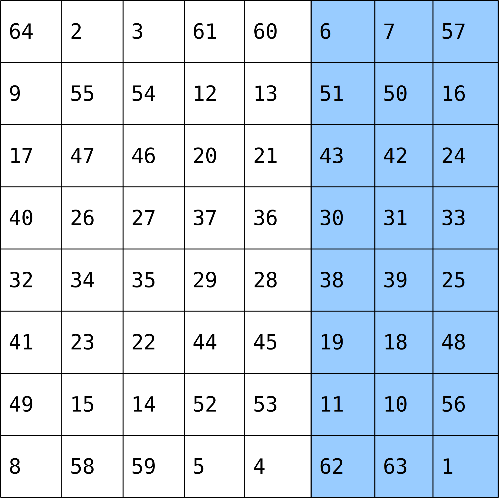

Programming with MATLAB
Analyzing Patient Data
Learning Objectives
- Get to know the MATLAB environment.
- Learn about MATLAB arrays.
- Read tabular data from a file into a program.
- Assign values to variables.
- Select individual values and subsections from data.
- Perform operations on arrays of data.
- Display simple graphs.
We are studying inflammation in patients who have been given a new treatment for arthritis, and need to analyze the first dozen data sets. The data sets are stored in Comma Separated Values (CSV) format: each row holds information for a single patient, and the columns represent successive days. The first few rows of our first file, inflammation-01.csv, look like this:
0,0,1,3,1,2,4,7,8,3,3,3,10,5,7,4,7,7,12,18,6,13,11,11,7,7,4,6,8,8,4,4,5,7,3,4,2,3,0,0
0,1,2,1,2,1,3,2,2,6,10,11,5,9,4,4,7,16,8,6,18,4,12,5,12,7,11,5,11,3,3,5,4,4,5,5,1,1,0,1
0,1,1,3,3,2,6,2,5,9,5,7,4,5,4,15,5,11,9,10,19,14,12,17,7,12,11,7,4,2,10,5,4,2,2,3,2,2,1,1
0,0,2,0,4,2,2,1,6,7,10,7,9,13,8,8,15,10,10,7,17,4,4,7,6,15,6,4,9,11,3,5,6,3,3,4,2,3,2,1
0,1,1,3,3,1,3,5,2,4,4,7,6,5,3,10,8,10,6,17,9,14,9,7,13,9,12,6,7,7,9,6,3,2,2,4,2,0,1,1We want to:
- load that data into memory,
- calculate the average inflammation per day across all patients, and
- plot the result.
To do all that, we’ll have to learn a little bit about programming.
We have a dozen datasets that need analysis, stored as .csv files - but MATLAB doesn’t know about these files yet. The first thing we need to do is set MATLAB’s path to include the directory containing the files. The MATLAB path is a list of directories on your computer that MATLAB knows about. To do this, we go to the Home tab, click on Set Path, and then on Add with Subfolders.... We navigate to the directory containing our files and add it to the path to tell MATLAB where to look for our files. When you refer to a file (either code or data), MATLAB will search all the directories in the path to find it. Alternatively, for data files, we can also provide the relative or absolute file path.
Before we can start programming, we need to know a little about the MATLAB interface. Using the default setup, the MATLAB desktop contains several important sections:
- In the Command Window or shell we can run and debug our code. Everything that’s typed into the command window is executed immediately.
Alternatively, we can open the Editor, write our code and run it all at once. The upside of this is that we can save our code and run it again in the same way at a later stage.
Search Documentation on the top right of your screen lets you search for functions. Suggestions for functions that would do what you want to do will pop up. Clicking on them will open the documentation.
Reading data from files and writing data to them are essential tasks in scientific computing, and admittedly, something that we’d rather not spend a lot of time thinking about. Fortunately, MATLAB comes with a number of high-level tools to do these things efficiently, sparing us the grisly detail.
If we know what our data looks like (in this case, we have comma-separated values) and we’re unsure about what command we want to use, we can search the documentation. Type read csv into the documentation toolbar. MATLAB suggests using csvread. If we have a closer look at the documentation, MATLAB also tells us, which in- and output arguments this function has.
To load the data from our CSV file into MATLAB, type following command into the MATLAB shell, and press Enter:
csvread('inflammation-01.csv')You should see a wall of numbers on the screen—these are the values from the CSV file. It can sometimes be useful to see the output from MATLAB commands, but it is often not. To suppress the output, simply put a semicolon at the end of your command:
csvread('inflammation-01.csv');The expression csvread(...) is a function call. Functions generally need parameters to run. In the case of the csvread function, we need to provide a single parameter: the name of the file we want to read data from. This parameter needs to be a character string or string, so we put it in quotes.
Our call to csvread read our file, and printed the data inside to the screen. And adding a semicolon rendered it even less useful— we have no way to modify those values or compute with them. To do that, we need to assign the array to a variable.
patient_data = csvread('inflammation-01.csv');A variable is just a name for a piece of data or value. Variable names must begin with a letter, and can contain numbers or underscores. Examples of valid variable names are x, f_0 or current_temperature.
We can create a new variable simply by assigning a value to it using =:
weight_kg = 55;Once a variable has a value, we can print it using the disp function:
disp(weight_kg);55and do arithmetic with it:
weight_lb = 2.2 * weight_kg;
disp(['Weight in pounds: ', num2str(weight_lb)]);Weight in pounds: 121The disp function takes a single parameter – the value to print. To print more than one value on a single line, we could print an array of values. All values in this array need to be the same type. So, if we want to print a string and a numerical value together, we have to convert that numerical value to a string with the num2str function.
If we imagine the variable as a sticky note with a name written on it, assignment is like putting the sticky note on a particular value:

Assigning a value to one variable does not change the values of other variables. For example,
weight_kg = 57.5;
weight_lb = 2.2 * weight_kg;
disp(['Weight in kg: ', num2str(weight_kg)]);
disp(['Weight in pounds: ', num2str(weight_lb)]);Weight in kg: 57.5
Weight in pounds: 126.5
Let’s update the value of one of our variable, and print the values of both:
weight_kg = 100;
disp(['Weight in kg: ', num2str(weight_kg); 'Weight in pounds: ',
num2str(weight_lb)]);Weight in kg: 100
Weight in pounds: 126.5
Since weight_lb doesn’t “remember” where its value came from, it isnt automatically updated when weight_kg changes. This is important to remember, and different from the way spreadsheets work.
Now that we know how to assign things to variables, let’s re-run csvread and save its result.
patient_data = csvread('inflammation-01.csv');MATLAB provides a command to list all variables that have been assigned data.
whoVariables in the current scope:
patient_data
weight_kg
weight_lb
To remove a variable from MATLAB, use the clear command:
clear weight_lb
whoVariables in the current scope:
patient_data
weight_kg
Alternatively, we can look at the Workspace. The workspace contains all variable names and assigned values that we currently work with. As long as they pop up in the workspace, they are universally available. It’s generally a good idea to keep the workspace as clean as possible. To do that, simply type clear all.
Predicting Variable Values
- Predict what variables refer to what values after each statement in the following program:
mass = 47.5
age = 122
mass = mass * 2.0
age = age - 20Now that our data is in memory, we can start doing things with it. First, let’s find out its size or shape:
size(patient_data)ans =
60 40The output tells us that the variable patient_data refers to a table of values that has 60 rows and 40 columns.
MATLAB stores all data in the form of arrays. For example:
- Numbers, or scalars are arrays of zero dimensions, as are single characters,
- Lists of numbers, or vectors are arrays of one dimension,
- Tables of numbers, or matrices are arrays of two dimensions,
- Even character strings, like sentences, are stored as an “array of characters”.
Normally, MATLAB arrays can’t store elements of different data types. For instance, a MATLAB array can’t store both a float and a char. To do that, you have to use a Cell Array.
We can use the class function to find out what kind of data lives inside an array:
class(patient_data)ans = doubleThis output tells us that patient_data refers to an array of double precision floating-point numbers. This is the default numeric data type in MATLAB. If you want to store other numeric data types, you need to tell MATLAB explicitly. For example, the command,
x = int16(325);assigns the value 325 to the name x, storing it as a 16-bit signed integer.
Let’s create an 8-by-8 “magic” Matrix:
M = magic(8)ans =
64 2 3 61 60 6 7 57
9 55 54 12 13 51 50 16
17 47 46 20 21 43 42 24
40 26 27 37 36 30 31 33
32 34 35 29 28 38 39 25
41 23 22 44 45 19 18 48
49 15 14 52 53 11 10 56
8 58 59 5 4 62 63 1We want to access a single value from the matrix:

To do that, we must provide its index in brackets:
M(5, 6)ans = 38Indices are provided as (row, column). So the index (5, 6) selects the element on the fifth row and sixth column.
An index like (5, 6) selects a single element of an array, but we can also access sections of the matrix, or slices. To access a row of values:

we can do:
M(5, :)ans =
32 34 35 29 28 38 39 25
Providing : as the index for a dimension selects all elements along that dimension. So, the index (5, :) selects the elements on row 5, and all columns—effectively, the entire row. We can also select multiple rows,

M(1:4, :)ans =
64 2 3 61 60 6 7 57
9 55 54 12 13 51 50 16
17 47 46 20 21 43 42 24
40 26 27 37 36 30 31 33and columns:

M(:, 6:end)ans =
6 7 57
51 50 16
43 42 24
30 31 33
38 39 25
19 18 48
11 10 56
62 63 1To select a submatrix,

we have to take slices in both dimensions:
M(4:6, 5:7)ans =
36 30 31
28 38 39
45 19 18
We don’t have to take all the values in the slice—if we provide a stride. Let’s say we want to start with row 2, and subsequently select every third row:

M(2:3:end, :)ans =
9 55 54 12 13 51 50 16
32 34 35 29 28 38 39 25
8 58 59 5 4 62 63 1And we can also select values in a “checkerboard”,

by taking appropriate strides in both dimensions:
M(1:3:end, 2:2:end)ans =
2 61 6 57
26 37 30 33
15 52 11 56Slicing
A subsection of an array is called a slice. We can take slices of character strings as well:
element = 'oxygen';
disp(['first three characters: ', element(1:3)])
disp(['last three characters: ', element(4:6)])first three characters: oxy
last three characters: gen What is the value of
element(4:end)? What aboutelement(1:2:end)? Orelement(2:end - 1)?For any size array, Matlab allows us to index with a single colon operator (
:). This can have surprising effects. For instance, compareelementwithelement(:). What issize(element)versussize(element(:))? Finally, try using the single colon on the matrixMabove:M(:). What seems to be happening when we use the single colon operator for slicing?
Now that we know how to access data we want to compute with, we’re ready to analyze patient_data. MATLAB knows how to perform common mathematical operations on arrays. If we want to find the average inflammation for all patients on all days, we can just ask for the mean of the array:
mean(patient_data(:))ans = 6.1487We couldn’t just do mean(patient_data) because, that would compute the mean of each column in our table, and return an array of mean values. The expression patient_data(:) flattens the table into a one-dimensional array.
To get details about what a function, like mean, does and how to use it, use MATLAB’s help command.
help mean -- Function File: mean (X)
-- Function File: mean (X, DIM)
-- Function File: mean (X, OPT)
-- Function File: mean (X, DIM, OPT)
Compute the mean of the elements of the vector X.
mean (x) = SUM_i x(i) / N
If X is a matrix, compute the mean for each column and return them
in a row vector.
The optional argument OPT selects the type of mean to compute. The
following options are recognized:
"a"
Compute the (ordinary) arithmetic mean. [default]
"g"
Compute the geometric mean.
"h"
Compute the harmonic mean.
If the optional argument DIM is given, operate along this
dimension.
Both DIM and OPT are optional. If both are supplied, either may
appear first.
See also: median, mode.We can also compute other statistics, like the maximum, minimum and standard deviation.
disp(['Maximum inflammation: ', num2str(max(patient_data(:)))]);
disp(['Minimum inflammation: ', num2str(min(patient_data(:)))]);
disp(['Standard deviation: ', num2str(std(patient_data(:)))]);Maximum inflammation: 20
Minimum inflammation: 0
Standard deviation: 4.6148When analyzing data, though, we often want to look at partial statistics, such as the maximum value per patient or the average value per day. One way to do this is to assign the data we want to a new temporary array, then ask it to do the calculation:
patient_1 = patient_data(1, :)
disp(['Maximum inflation for patient 1: ', max(patient_1));Maximum inflation for patient 1: 18We don’t actually need to store the row in a variable of its own. Instead, we can combine the selection and the function call:
max(patient_data(1, :))ans = 18What if we need the maximum inflammation for all patients, or the average for each day? As the diagram below shows, we want to perform the operation across an axis:

To support this, MATLAB allows us to specify the dimension we want to work on. If we ask for the average across the dimension 1, we get:
mean(patient_data, 1)ans =
Columns 1 through 13:
0.00000 0.45000 1.11667 1.75000 2.43333 3.15000 3.80000 3.88333 5.23333 5.51667 5.95000 5.90000 8.35000
Columns 14 through 26:
7.73333 8.36667 9.50000 9.58333 10.63333 11.56667 12.35000 13.25000 11.96667 11.03333 10.16667 10.00000 8.66667
Columns 27 through 39:
9.15000 7.25000 7.33333 6.58333 6.06667 5.95000 5.11667 3.60000 3.30000 3.56667 2.48333 1.50000 1.13333
Column 40:
0.56667
As a quick check, we can check the shape of this array:
size(mean(patient_data, 1))ans =
1 40The shape tells us we have a 1-by-40 vector, so this is the average inflammation per day for all patients. If we average across axis 2, we get:
mean(patient_data, 2)ans =
5.4500
5.4250
6.1000
5.9000
5.5500
6.2250
5.9750
6.6500
6.6250
6.5250
6.7750
5.8000
6.2250
5.7500
5.2250
6.3000
6.5500
5.7000
5.8500
6.5500
5.7750
5.8250
6.1750
6.1000
5.8000
6.4250
6.0500
6.0250
6.1750
6.5500
6.1750
6.3500
6.7250
6.1250
7.0750
5.7250
5.9250
6.1500
6.0750
5.7500
5.9750
5.7250
6.3000
5.9000
6.7500
5.9250
7.2250
6.1500
5.9500
6.2750
5.7000
6.1000
6.8250
5.9750
6.7250
5.7000
6.2500
6.4000
7.0500
5.9000which is the average inflammation per patient across all days.
The mathematician Richard Hamming once said, “The purpose of computing is insight, not numbers,” and the best way to develop insight is often to visualize data. Visualization deserves an entire lecture (or course) of its own, but we can explore a few features of MATLAB here.
Let’s display a heat map of our data:
imagesc(patient_data)
The imagesc function represents the matrix as a color image. Every value in the matrix is mapped to a color. Blue regions in this heat map are low values, while red shows high values. As we can see, inflammation rises and falls over a 40 day period. Let’s take a look at the average inflammation over time:
ave_inflammation = mean(patient_data, 1);
plot(ave_inflammation);
Here, we have put the average per day across all patients in the variable ave_inflammation, then used the plot function to display a line graph of those values. The result is roughly a linear rise and fall, which is suspicious: based on other studies, we expect a sharper rise and slower fall. Let’s have a look at two other statistics: the maximum and minimum inflammation per day across all patients.
plot(max(patient_data, [], 1));
title('Maximum inflammation per day');
plot(min(patient_data, [], 1));
title('Minimum inflammation per day');
Like mean(), the functions max() and min() can also operate across a specified dimension of the matrix. However, the syntax is slightly different. To see why, run a help on each of these functions.
From the figures, we see that the maximum value rises and falls perfectly smoothly, while the minimum seems to be a step function. Neither result seems particularly likely, so either there ’s a mistake in our calculations or something is wrong with our data.
Plots
Why do our graphs stop just short of 0 at their left edge? Why are the vertical lines in our plot of the minimum inflammation per day not perfectly vertical?
Create a plot showing the standard deviation of the inflammation data for each day across all patients.
It’s common to put multiple figures “side-by-side” in a single window for presentation and convenience. Here’s how to use the subplot function to do this:
subplot(1, 2, 1);
plot(max(patient_data, [], 1));
ylabel('max')
subplot(1, 2, 2);
plot(min(patient_data, [], 1));
ylabel('min')
Our work so far has convinced us that something is wrong with our first data file. We would like to check the other 11 the same way, but typing in the same commands repeatedly is tedious and error-prone. Since computers don’t get bored (that we know of), we should create a way to do a complete analysis with a single command, and then figure out how to repeat that step once for each file. These operations are the subjects of the next two lessons.